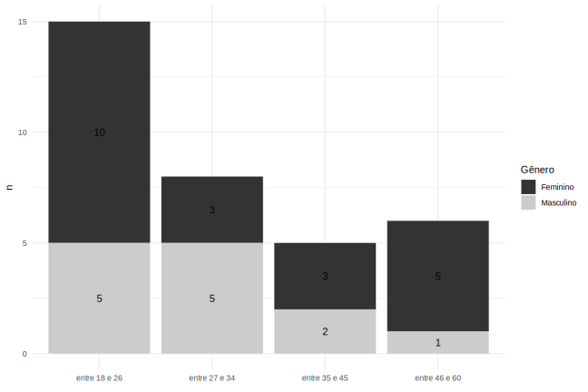

Capítulo 5 Análise descritiva
5.1 Perfil dos participantes
5.1.1 Sexo e idade
Os 34 participantes do estudo estão divididos entre 21 mulheres e 13 homens, com idades que variam entre 18 e 60 anos. O gráfico ?? mostra a distribuição dos respondentes segundo a faixa etária e gênero.

5.1.2 Área de formação
Parte considerável dos participantes (10) são ingressantes do curso de Letras, logo, para a análise inferencial, essa variável foi categorizada em dois níveis. A tabela ?? mostra esse agrupamento da formação dos voluntários. Este é um dos fatores que a pesquisa busca entender se influencia ou não na categorização das pseudopalavras.
Outras variáveis relacionadas com a linguagem (conhecimento em música e de outras línguas) também foram transformadas em variáveis binárias, pois há interesse em saber se isso afeta na percepção da tonicidade de palavras. A distribuição inicial das variáveis por participante também pode ser observada nas tabelas ?? e ??.
| Área de formação | Número de participantes |
|---|---|
| Outro | 19 |
| Letras | 15 |
| musica | n |
|---|---|
| 1 | 21 |
| 0 | 13 |
| area_formacao | n |
|---|---|
| Outro | 19 |
| Letras | 15 |
5.2 Variáveis linguísticas
Verifica-se que a proporção de proparoxítonas é inferior às outras categorias em todos os grupos, o que já era esperado devido à baixa frequência de palavras proparoxítonas de três sílabas na estrutura proposta (CV-CV-CV ou CV-CV-CVC). (PROCURAR REFERÊNCIA)
Também observamos na tabela ?? que os grupos 2 e 4 (ou seja, os grupos em que as palavras sofreram mais alterações em relação à referência original) apresentam uma proporção ainda menor de proparoxítonas quando comparados aos grupos 1 e 3.
| Tonicidade palavra-alvo | 1 (Similar de alta freq.) | 2 (Dissimilar de alta freq.) | 3 (Similar de baixa freq.) | 4 (Dissimilar de baixa freq.) | Total |
|---|---|---|---|---|---|
| oxítona | 1213 (25.04%) | 1207 (24.912%) | 1216 (25.098%) | 1209 (24.954%) | 4845 |
| paroxítona | 1216 (25.15%) | 1205 (24.922%) | 1209 (25.005%) | 1205 (24.922%) | 4835 |
| proparoxítona | 606 (21.41%) | 606 (21.406%) | 810 (28.612%) | 809 (28.576%) | 2831 |
| Tonicidade produção | 1 (Similar de alta freq.) | 2 (Dissimilar de alta freq.) | 3 (Similar de baixa freq.) | 4 (Dissimilar de baixa freq.) | Total |
|---|---|---|---|---|---|
| oxítona | 1077 (22.0%) | 1152 (23.5%) | 1308 (26.7%) | 1367 (27.9%) | 4904 |
| paroxítona | 1805 (25.2%) | 1818 (25.4%) | 1760 (24.6%) | 1780 (24.8%) | 7163 |
| proparoxítona | 153 (34.5%) | 48 (10.8%) | 167 (37.6%) | 76 (17.1%) | 444 |
Comparando a tonicidade das pseudopalavras e a tonicidade das palavras-alvo, nota-se que
| tonicidade_producao | oxitona | paroxitona | proparoxitona | total |
|---|---|---|---|---|
| oxítona | 2642 (54%) | 1939 (39.54%) | 323 (7%) | 4904 |
| paroxítona | 2154 (30%) | 2824 (39.42%) | 2185 (31%) | 7163 |
| proparoxítona | 49 (11%) | 72 (16.22%) | 323 (73%) | 444 |
| Tonicidade palavra-alvo | CV-CV-CV | CV-CV-CVC | Total |
|---|---|---|---|
| oxítona | 2417 (49.89%) | 2428 (50.11%) | 4845 |
| paroxítona | 2427 (50.20%) | 2408 (49.80%) | 4835 |
| proparoxítona | 2427 (85.73%) | 404 (14.27%) | 2831 |
Estrutura x tonicidade pseudopalavra
A tabela 5.1 mostra o perfil dos informantes segundo sua naturalidade.
etc etc
| naturalidade | n |
|---|---|
| São Paulo, SP | 16 |
| Outros municípios de SP | 12 |
| Outras UF | 6 |